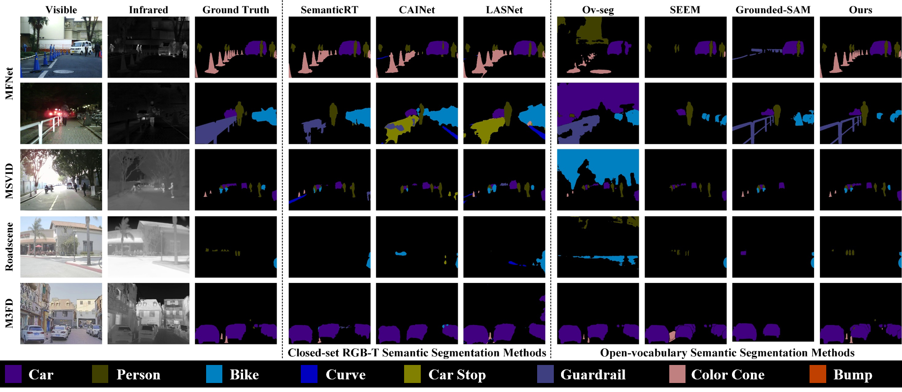
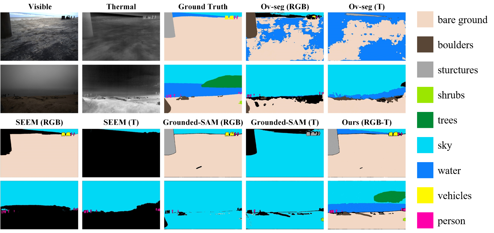
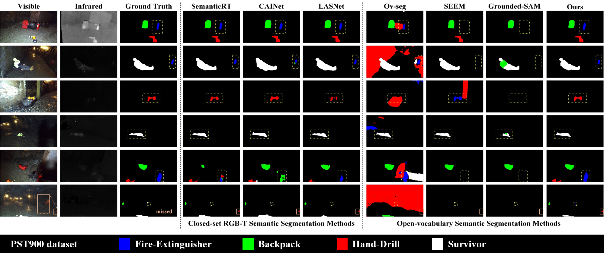

Abstract
Semantic segmentation is a critical technique for effective scene understanding. Traditional RGB-T semantic segmentation models often struggle to generalize across diverse scenarios due to their reliance on pretrained models and predefined categories. Recent advancements in Visual Language Models (VLMs) have facilitated a shift from closed-set to open-vocabulary semantic segmentation methods. However, these models face challenges in dealing with intricate scenes, primarily due to the heterogeneity between RGB and thermal modalities. To address this gap, we present Open-RGBT, a novel open-vocabulary RGB-T semantic segmentation model. Specifically, we obtain instance-level detection proposals by incorporating visual prompts to enhance category understanding. Additionally, we employ the CLIP model to assess image-text similarity, which helps correct semantic consistency and mitigates ambiguities in category identification. Empirical evaluations demonstrate that Open-RGBT achieves superior performance in diverse and challenging real-world scenarios, even in the wild, significantly advancing the field of RGB-T semantic segmentation.
EXPERIMENT
1.1 RGB-T Zero-shot Semantic Segmentation

1.2 Robustness to Adverse Open Environments
Scene 1
Scene 2
Scene 3
Scene 4
Ours 1
Ours 2
Ours 3
Ours 4
Ground Truth 1
Ground Truth 2
Ground Truth 3
Ground Truth 4
1.3 Performance Analysis in Open Environments——Wild

1.4 Performance Analysis in Open Environments——Underground
